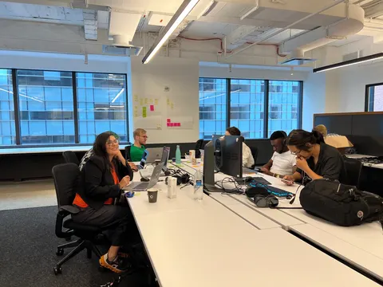
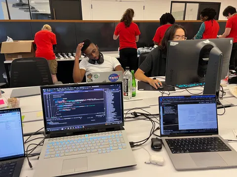
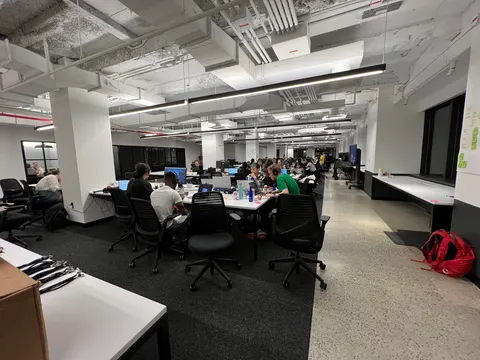
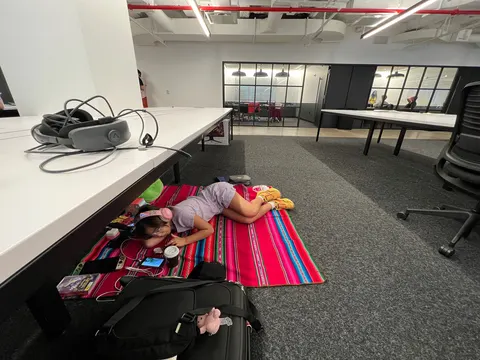
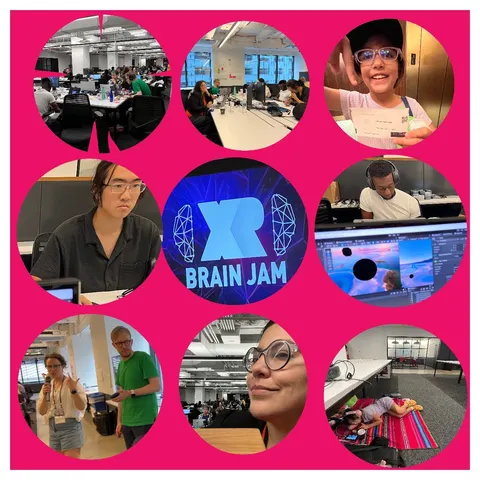
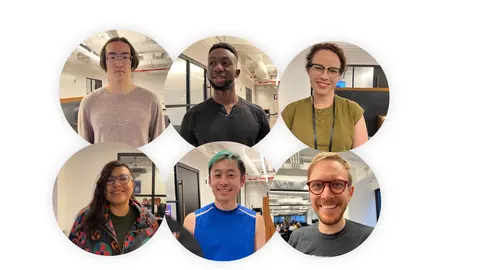
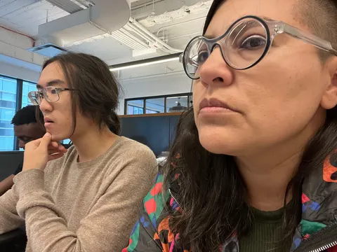
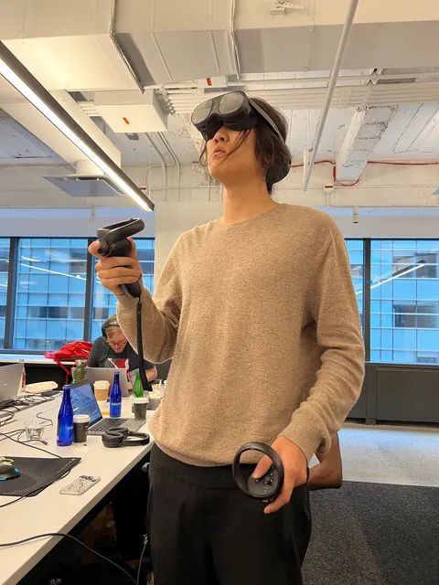
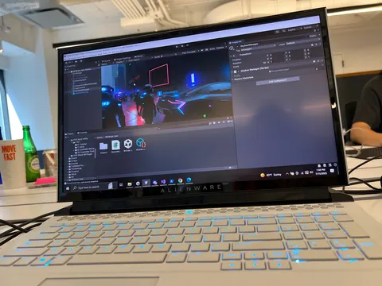
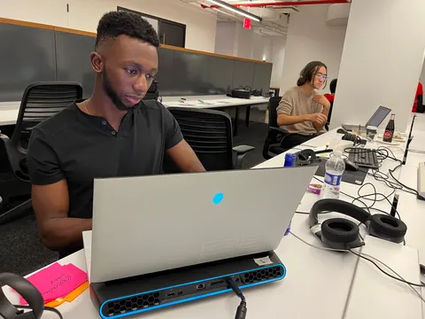

Violeta Ayala wins the XR Innovation 2023 award at Brain Jam, Games for Change, New York
At Brain Jam in New York six creators build twelve worlds of self-representation in 27 hours, starting from Aunt Victoria in Tiupampa. The work wins an Innovation Award.
In Which We Fly, and Suri Plays
Suri and I, in the sky, but also on a plane. She in her game 🎮, me crashed, long flight ✈️. My BFF Akiyo picked us up at the airport, hugs, 🍜 🍱, and I turned her into an animation ➡️
In Which We Are Colored, Literally
The Color Museum was confetti, silent disco, balls, a pool of balls. We had fun.
In Which We Jam, With Brains
Brain Jam, a gathering, but also a challenge. Seventy-plus creators, organizers, jury members, and us. Rules spoken, but also understood. (I was sooo jet-lagged.)
We were six creators, and we had one question: how to go beyond what we know, what we’ve been told? How to self-represent in ways not written, not drawn, but felt?
In Which We Work, With Aunt Victoria in my ❤️
Aunt Victoria, my aunt but also a guide. A 70-year-old Quechua woman that lives in Tiupampa, understanding the world in her way, our way. Only she can tell her own story. A prototype to give her a tool, to represent her world, her words, her emotions, tangible. It was 27 hours, 6 creators, we created 12 worlds of pure self-representation.
In Which We Struggle, But Also Create
It was hard. Creation without formulas, without patterns. A vertical way of thinking had to turn on its feet, but also a circular, spiral, zigzag way. We took our grandmother’s wisdom as a starting point.













In Which We Win, But Also Learn
An Innovation Award at Brain Jam 2023. A victory, but also a lesson. Not about what we created, but what others can create from it. A tool, but also a gift.
Days later, Brian and I presented our work publicly at Games For Change, Microsoft offices in Downtown NY. I remember the ninja turtle billboards from the window. You can actually experience the project her🤖


In Which We Reflect, But Also Invite
This is a journey with Suri, with Aunt Victoria, with my grandma Herminia, with you. It’s an adventure, but also a dance.
It’s a question, but also an offering.
Join me in this, and let’s imagine a future, a present, a past that’s more than what we see. A world that’s ours, but also everyone’s.